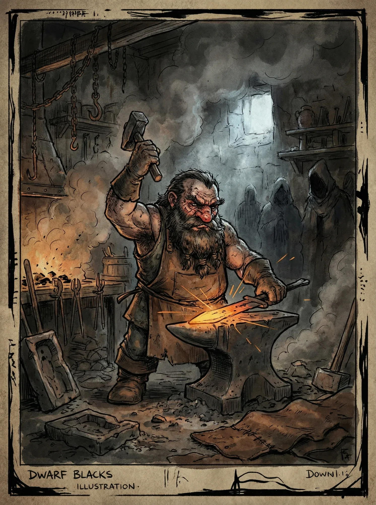

Anão
Baixos, robustos e inflexíveis como a rocha que os criou.
Os anões de Khalkaria não são um povo de sorrisos fáceis ou palavras vazias — cada sílaba que pronunciam carrega o peso de séculos de tradição forjada no fogo e na bigorna. Suas cidades subterrâneas são verdadeiras fortalezas de ferro e pedra, escavadas nas entranhas das montanhas mais hostis do continente.
Perícias de Raça
Fortitude ou Ofício (Qualquer)
Características de Raça
Visão no Escuro
Você enxerga no escuro em até 18 metros, vendo em tons de cinza metálico.
Resiliência Anã
- Uma vez por descanso longo, pode rolar um teste de Fortitude com Vantagem.
- Você precisa de apenas 4 horas para descansar completamente.
- Você é imune a Envenenamento.
Treinamento Anão
Anões são treinados a utilizar as armas que fabricam. Você começa treinado em Armas Marciais e Armas à Distância.
Relações Sociais
Os anões são isolacionistas e desconfiados por natureza. Outras raças os veem como avarentos, arrogantes e inflexíveis — e os anões não negam. Para eles, o mundo externo é caótico, impreciso e cheio de mentirosos.
Clãs Ancestrais
Anões se identificam mais por clã do que por indivíduo. Escolha um:
Krichama
Os mestres ferreiros e armeiros de Khalkaria. Suas forjas ardem há séculos ininterruptos, alimentadas por fogo alquímico e carvão primordial. Cada peça que criam é uma obra-prima, mas apenas para quem pode pagar o preço.
- Treinado em Ofício (Ferraria)
- Você tem Ae 5 a dano de Fogo.
- Durante um descanso longo, você pode fabricar 2 Equipamentos, ao invés de 1.
Caxon
Engenheiros, arquitetos e defensores das fortalezas subterrâneas. Constroem muralhas que nunca caem e túneis que atravessam continentes. São os anões mais tradicionalistas, inflexíveis, pragmáticos, brutalmente honestos.
- Treinado em Ofício (Engenharia)
- Você tem Ar 3 Natural
- Durante um descanso longo, você pode fabricar 2 Bugigangas, ao invés de 1.